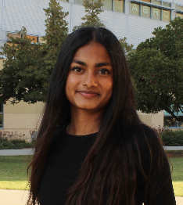

home

I'm Nithyasri Palanisamy, a second-year Computer Science student at Cal Poly interested in machine learning and artificial intelligence. I love building creative tech projects, listening to music, and playing the electric guitar.